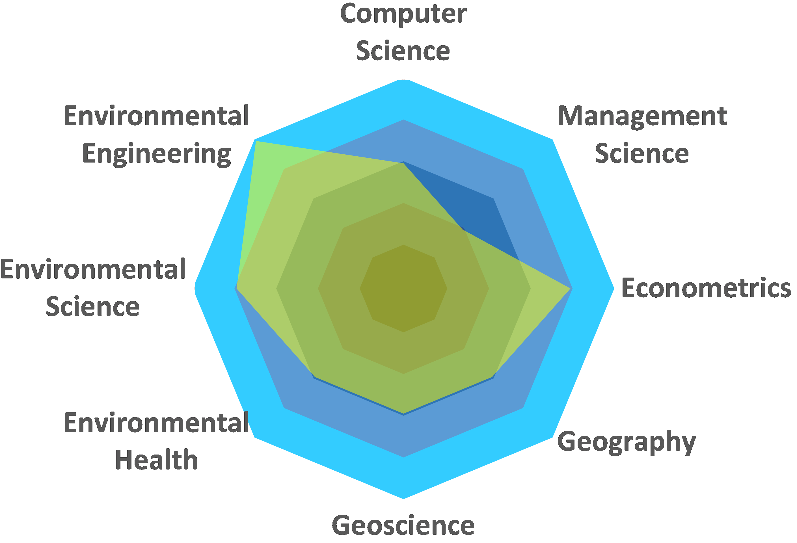

<div class="home">

  <!--h1 class="page-heading">Components</h1-->

  <div></img></div>
  
  <p class="rss-subscribe">subscribe <a href="{{ "/feed.xml" | prepend: site.baseurl }}">via RSS</a></p>

</div>
